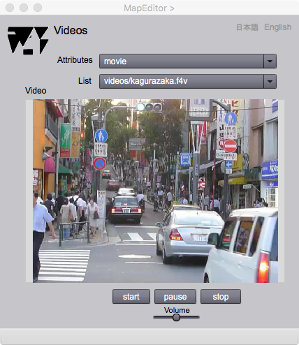

Video viewer
Introduction
The pictogram box appears if a symbol on the map is clicked after View Attributes check box is checked. The video viewer is displayed if the pictogram for video is 'on'. However if there is no video in the feature, the information page will be empty.
Video viewer

Figure 1. Information page for video display
FIELDS
attributes (selectable)
A user can select a name of a video attribute.
List (selectable)
The list of videos. If there are more than one videos in a feature, the video will be displayed by the selection of a row in the drop down list.
Video
Video appeares in this area.
BUTTONS
start
The video startes by clicking this button.
pause / restart
Pause or restart of the video is indicated by this button.
stop
The video stops by clicking this button.
Volume
The volume of the sound in the video can be changed by this slider．
日本語
今あなたが読んでいるドキュメントが表示されます．
English
You can read the tutorial written in English.